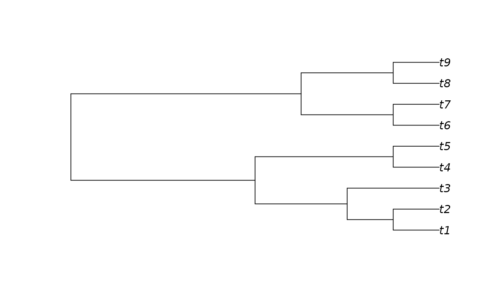
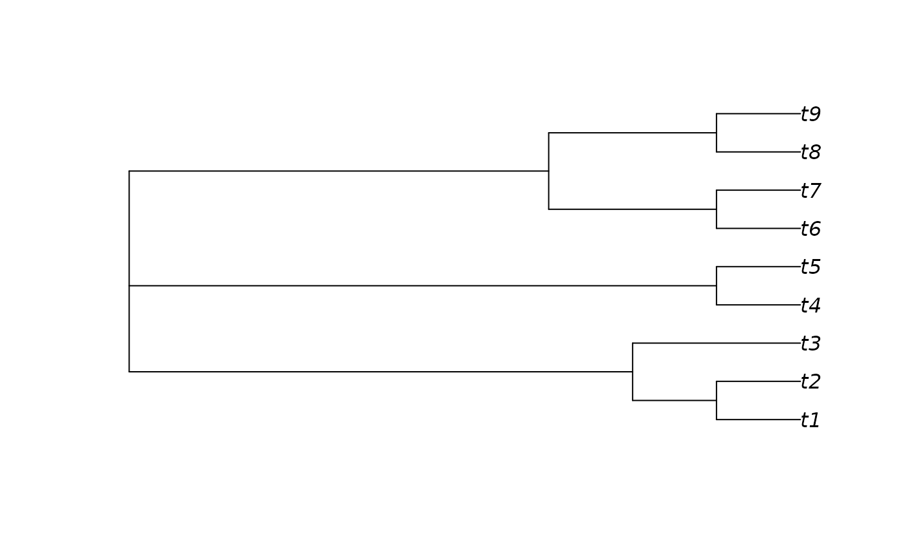
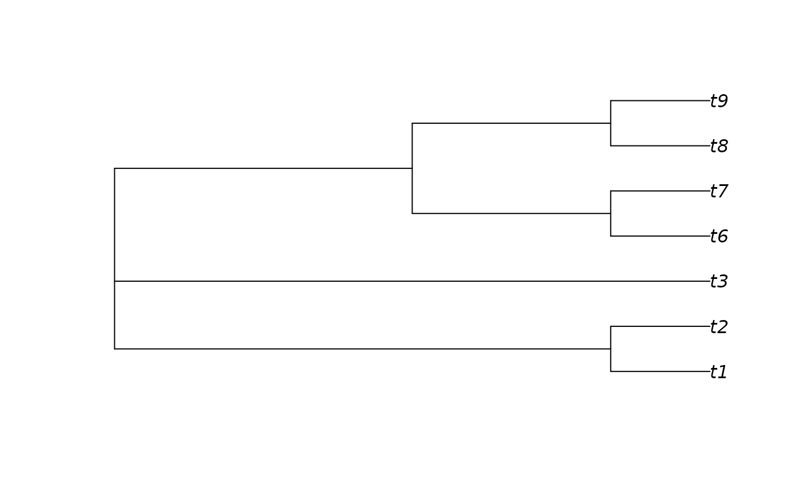

DropTip() removes specified leaves from a phylogenetic tree, collapsing
incident branches.
Usage
DropTip(tree, tip, preorder = TRUE, check = TRUE)
KeepTip(tree, tip, preorder = TRUE, check = TRUE)
# S3 method for class 'phylo'
DropTip(tree, tip, preorder = TRUE, check = TRUE)
# S3 method for class 'phylo'
KeepTip(tree, tip, preorder = TRUE, check = TRUE)
# S3 method for class 'Splits'
KeepTip(tree, tip, preorder = TRUE, check = TRUE)
# S3 method for class 'Splits'
DropTip(tree, tip, preorder, check = TRUE)
DropTipPhylo(tree, tip, preorder = TRUE, check = TRUE)
# S3 method for class 'multiPhylo'
DropTip(tree, tip, preorder = TRUE, check = TRUE)
# S3 method for class 'multiPhylo'
KeepTip(tree, tip, preorder = TRUE, check = TRUE)
# S3 method for class 'list'
DropTip(tree, tip, preorder = TRUE, check = TRUE)
# S3 method for class 'list'
KeepTip(tree, tip, preorder = TRUE, check = TRUE)
# S3 method for class '`NULL`'
DropTip(tree, tip, preorder = TRUE, check = TRUE)
# S3 method for class '`NULL`'
KeepTip(tree, tip, preorder = TRUE, check = TRUE)
KeepTipPreorder(tree, tip)
KeepTipPostorder(tree, tip)Arguments
- tree
A tree of class
phylo.- tip
Character vector specifying labels of leaves in tree to be dropped or kept, or integer vector specifying the indices of leaves to be dropped or kept. Specifying the index of an internal node will drop all descendants of that node.
- preorder
Logical specifying whether to Preorder
treebefore dropping tips. SpecifyingFALSEsaves a little time, but will result in undefined behaviour iftreeis not in preorder.- check
Logical specifying whether to check validity of
tip. IfFALSEandtipcontains entries that do not correspond to leaves of the tree, undefined behaviour may occur.
Value
DropTip() returns a tree of class phylo, with the requested
leaves removed. The edges of the tree will be numbered in preorder,
but their sequence may not conform to the conventions of Preorder().
KeepTip() returns tree with all leaves not in tip removed,
in preorder.
Details
This function differs from ape::drop.tip(), which roots unrooted trees,
and which can crash when trees' internal numbering follows unexpected schema.
Functions
DropTipPhylo(): Direct call toDropTip.phylo(), to avoid overhead of querying object's class.KeepTipPreorder(): Faster version with no checks. Does not retain labels or edge weights. Edges must be listed in preorder. May crash if improper input is specified.KeepTipPostorder(): Faster version with no checks. Does not retain labels or edge weights. Edges must be listed in postorder. May crash if improper input is specified.
See also
Other tree manipulation:
AddTip(),
CollapseNode(),
ConsensusWithout(),
ImposeConstraint(),
KeptPaths(),
KeptVerts(),
LeafLabelInterchange(),
MakeTreeBinary(),
Renumber(),
RenumberTips(),
RenumberTree(),
RootTree(),
SortTree(),
Subtree(),
TipTimedTree(),
TrivialTree
Other split manipulation functions:
SplitConsistent(),
Subsplit(),
TrivialSplits()
Examples
tree <- BalancedTree(9)
plot(tree)

plot(DropTip(tree, c("t5", "t6")))
unrooted <- UnrootTree(tree)
plot(unrooted)

plot(DropTip(unrooted, 4:5))

summary(DropTip(as.Splits(tree), 4:5))
#> 4 bipartition splits dividing 7 tips, t1 .. t9
#> 1234567
#> 12 ***....
#> 13 **.....
#> 16 ...**..
#> 17 .....**
#>
#> Tip 1: t1 Tip 2: t2 Tip 3: t3 Tip 4: t6 Tip 5: t7
#> Tip 6: t8 Tip 7: t9